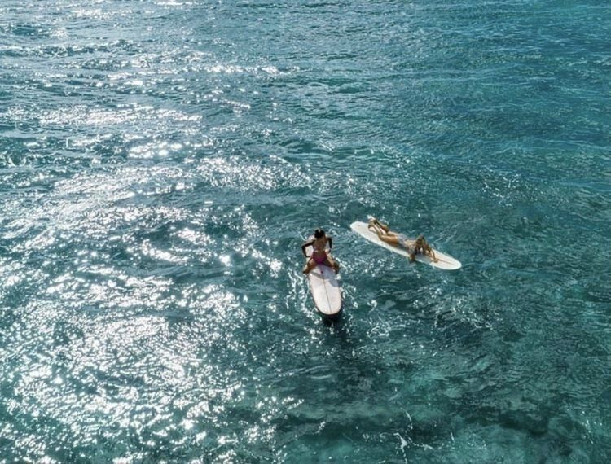

Hello! My name is Julia, and I am currently a Sophmore in high school in Los angeles! I love going to the beach, concerts, shopping, hanging out with my friends, and spending time with my dog. I also do ballet! The purpouse of this portfolio is to showcase my projects throughout my year of computer science. I have grown so much in my CS knowledge, because I had never done computer science prior to this year. I have gained many new skills that will benefit me in my everyday life.This class has taught me so many different things. In the beginning of the year, we made surveys and quizzes, and we are finishing off the year with making websites. I found the first projects and the first semester very easy and interesting, but as the year went on, projects got harder! I had to adjust and learn how to understand computer science, and I developed problem-solving skills and I feel that I became much smarter in the field of computer science!
